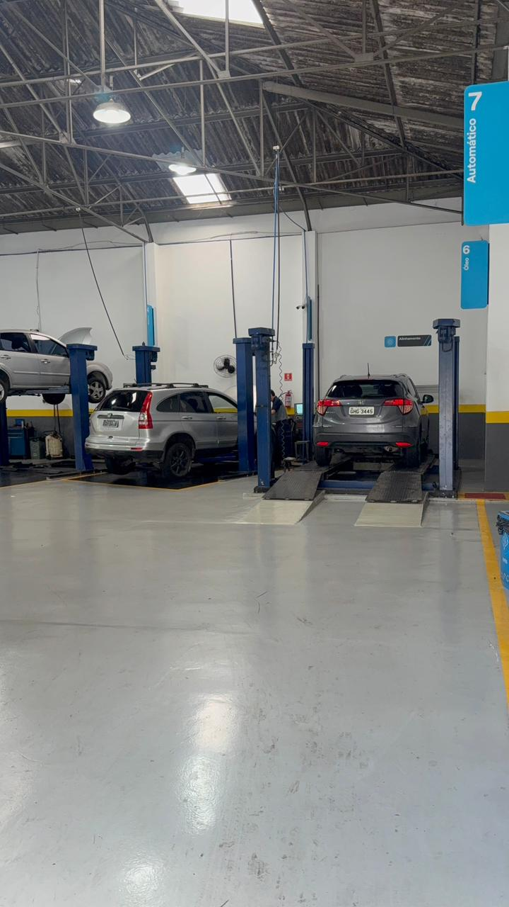
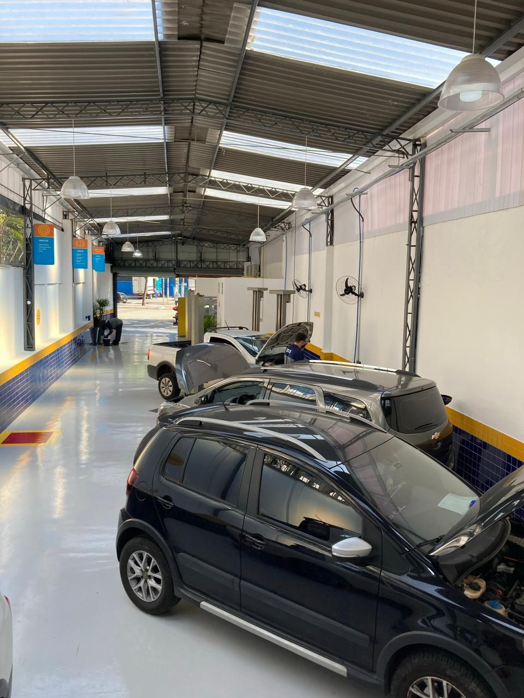
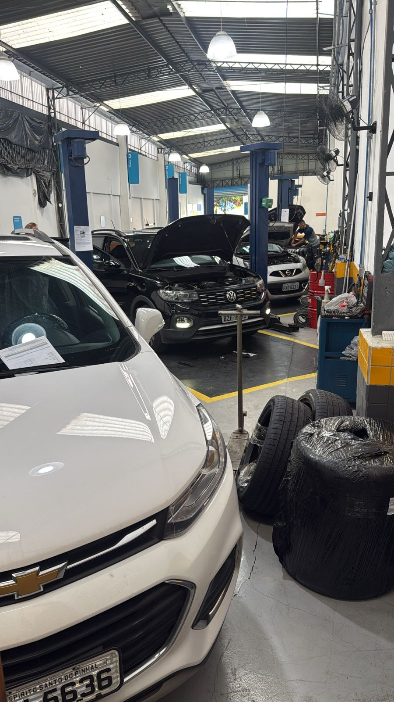

Dicas práticas de manutenção automotiva escritas pelos nossos mecânicos especializados.
No blog da Meta Centro Automotivo você encontra artigos sobre troca de óleo, alinhamento, freios, suspensão, higienização de ar-condicionado e outros cuidados que prolongam a vida útil do seu veículo. Conteúdo produzido por mecânicos de São Paulo com mais de 15 anos de experiência.

Entenda os intervalos recomendados, os tipos de óleo e por que seguir o manual do fabricante evita problemas sérios no motor.

Veja como esse serviço elimina odores, ácaros e bactérias, e quando é a hora certa de fazer.

Sinais de que o seu carro precisa desse serviço e como ele economiza pneus e combustível.